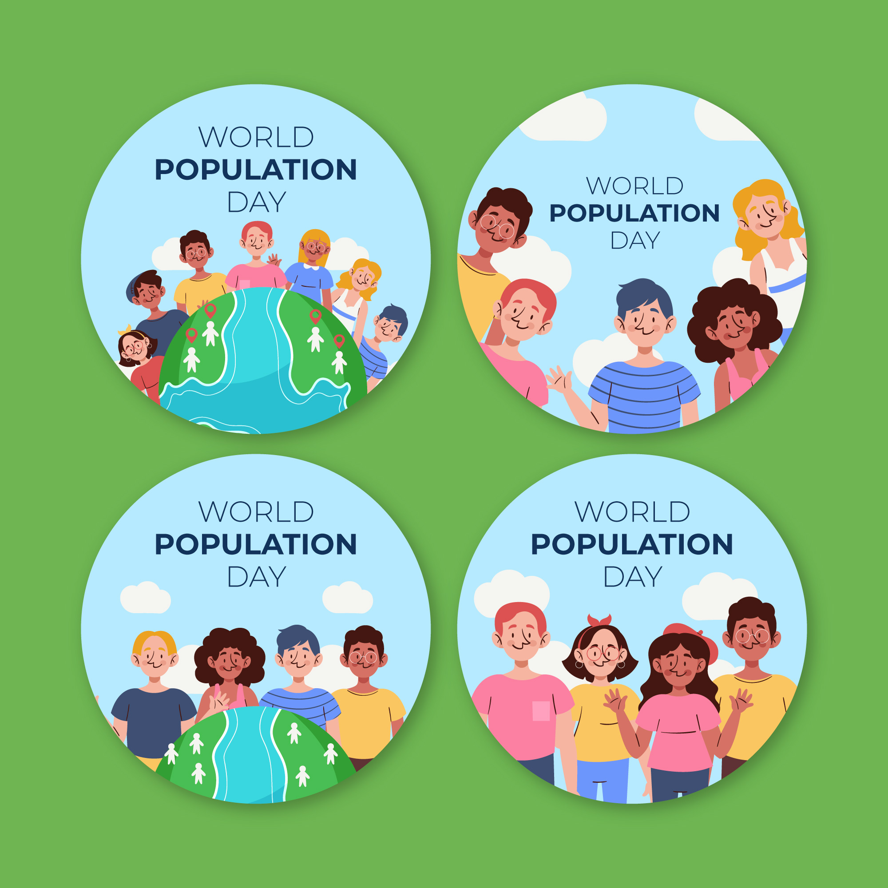
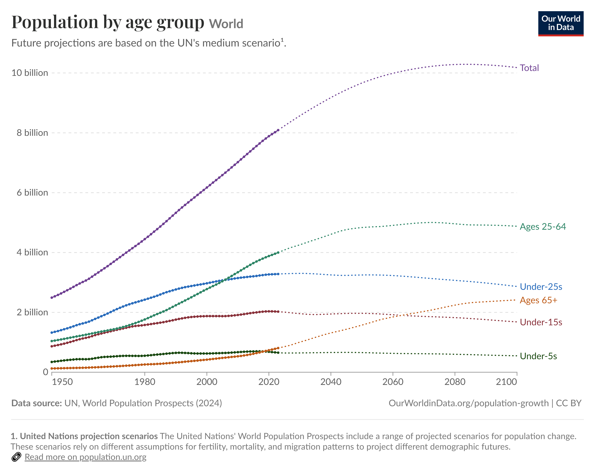

Who lives where, and how are populations changing?
Population is more than a number. Demography helps us understand population size, composition and distribution — and how these change through births, deaths, ageing and migration.
Population distribution also matters: people live in different places, in different age groups and under different social and economic circumstances. Understanding these patterns helps us ask better questions about health and health systems.
Population and demographic change influence the needs of communities and the resources required to support health. Births, deaths and migration change population size; age structure and population distribution help us understand who is present, where people live and what may be changing over time.
01
Population
How many people live in a place, and who they are.
02
Demographic change
How population size and composition change over time.
03
Ageing
How the age structure changes as fertility, mortality and longevity change.
04
Migration
How movement of people changes population distribution and composition.
EXPLORE THE WORLD
Population patterns are not the same everywhere
Population change happens differently across places and across time. Look carefully before you begin interpreting what you see.

DATA OBSERVATION
🔎 Look closely
What patterns do you notice?
What is changing?
What is staying similar?
What questions does this image make you want to ask?
DATA LITERACY · INVESTIGATE THE CURVES
📊 Read the Data: How is the world's age structure changing?
This graph shows the world's population by age group from
1950 through projected years to 2100
.

World population by age group, including historical estimates and projections. Source: UN 2024 population projections graphic supplied for this GHE learning page.
01
What do you notice?
What happens to the different age groups over time?
Which age groups appear to grow? Which change less?
What happens to the proportion of older people?
What might these changes mean for schools?
What might they mean for employment?
What might they mean for health services?
What might they mean for communities and families?
THINK DEEPER
If the age structure of a population changes, should the health system change too? Why?
CONNECT POPULATION TO PEOPLE'S LIVES
Life-course epidemiology
Population age structure tells us who is in the population.
Life-course epidemiology
helps us think about how health develops across people's lives.
Population structure
→
Life course
→
Health needs
→
Health systems
→
Policy
→
Responsible action
THE GHE DATA LENS
Look beyond the population count
Population patterns become more meaningful when we ask what social, economic and geographic factors may be connected with differences in health.
01
Age
Including
life-course epidemiology
:
health can be shaped by experiences and exposures across different stages of life.
02
Gender
Differences in opportunities, roles, experiences and health.
03
Income
Differences in financial resources.
04
Education
Differences in learning and opportunity.
05
Residence
Differences according to where people live.
06
Socioeconomic position
The broader social and economic circumstances in which people live.
07
GDP
Useful when comparing the economic context of countries or regions, while remembering that
GDP is not itself a measure of people's health.
THINK IN SYSTEMS
🔗 What happens when determinants connect?
Age, gender, income, education, residence and socioeconomic position do not operate in isolation. They can interact in complex ways, shaping opportunities, exposures, resources and access to services.
When we see a difference in health between populations, the GHE approach is to
investigate carefully
rather than jump to a simple explanation. Ask what differs, what might be connected, what evidence supports the relationship, and what other explanations should be considered.
SOCIAL DETERMINANTS OF HEALTH · SDGs
From demographic patterns to responsible action
Demographic change connects with social determinants of health and with the Sustainable Development Goals. Population trends can influence health, education, employment, cities, social protection and intergenerational relationships.
SDH
Ask how social and economic conditions may shape opportunities and health.
SDGs
Connect population change with shared goals for health, equity, education, decent work and sustainable communities.
GHE principle
Measure differences carefully. Investigate before judging. Use evidence to guide responsible action.
CHECK YOUR DATA REASONING
12 Questions: Population & Demography
Use the graph and the concepts on this page. Numerical questions are designed to make you read the curves and distinguish counts, proportions and timing.
Q1. What does demography primarily study?
Q2. Which combination can directly change population size?
Q3. Why is population distribution important for health planning?
Q4. Why does age structure matter to health systems?
Q5. Approximately how many people aged 65+ are projected to be in the world by 2100?
Q6. Approximately what proportion of the world's population is projected to be aged 65+ around 2100?
Q7. Why is life-course epidemiology useful when studying population ageing?
Q8. Which statement about GDP is most accurate?
Q9. Why can residence be relevant when comparing health?
Q10. Two populations show different health outcomes. What is the best GHE approach?
Q11. Which event happened first?
Q12. Approximately how many years later did the 65+ population overtake the under-5 population?
REFLECT → ACT
Think like a GHE Explorer
Choose one demographic change you noticed. Ask who may be affected, which determinants could be connected, what evidence you would need, and what responsible response might help.
Observe
→
Question
→
Investigate
→
Connect
→
Act
CONTINUE YOUR JOURNEY
Population data can become a question worth investigating.
Explore another GHE learning topic, or take your question into the Global Health Big Data Challenge.